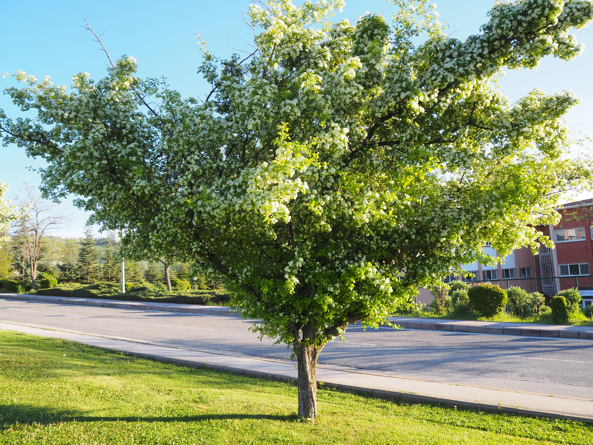

These are trees that can grow up to 10 meters tall. They are thorny. They flower between April and June and produce red, spherical fruits. They are widespread across almost every region of Türkiye. 10 metreye kadar boylanan ağaçlardır. Dikenlidirler. Nisan-Haziran aylarında çiçeklenir ve kırmızı küremsi meyveleri vardır. Ülkemizin hemen her bölgesine yayılmıştır.
There are many of them along the edges of the grass area on the East Campus. In addition, they can be seen in many places around the campus as well. Doğu kampüs çim alanda kenarlarda çokça vardır. Bunun yanı sıra kampüsün etrafında pek çok yerde görmek mümkündür.